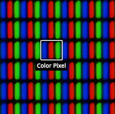

In de kunstwereld zijn geel, blauw en rood de basiskleuren die gebruikt worden, maar
computers, telefoons en printers gebruiken een ander kleursysteem om kleuren vast
te leggen en digitaal weer te geven. Zo weten ze precies welke kleur er bedoeld
wordt. Dit is belangrijk omdat kleuren er op een scherm anders uit kunnen zien
dan op bijvoorbeeld papier.
RGB
Het RGB-kleurmodel wordt gebruikt voor beeldschermen, zoals computers, telefoons of
televisies. Het model bestaat uit de kleuren Rood, Groen en Blauw.
Door deze verschillende kleuren licht met elkaar te mengen kan je heel veel
verschillende kleuren krijgen. Als je alle kleuren aanzet,(255,255,255), dan krijg je wit.
Als je alle kleuren uit zet, (0,0,0), dan krijg je zwart.
Vb)
Oranje wordt weergegeven als (255,165,0). Dit betekent dat rood op maximale sterkte
schijnt, groen op ongeveer twee derde sterkte en dan blauw uit staat.

CMY/CMY-K
In printers wordt het CMY/CMY-K model gebruikt. Hierbij gaat het niet om licht, maar
om inkt. De inkt bestaat uit de kleuren Cyaan, Magenta en geel (Yellow)
waar bijna alle kleuren mee gemaakt kunnen worden. De zwart (K) die hier nog aan
toe gevoegd wordt, zorgt voor diepere kleuren, meer contrast en sterke details.
Vb)
Oranje wordt weergegeven als 0% cyaan, 35% magenta, 100% geel en 0% zwart. De percentages geven aan
hoeveel er nodig is van elke kleur om de juiste tint te maken.
Pixels en resolutie
Beeldschermen zijn opgebouwd uit pixels die de kleuren op een scherm weergeven. In elke pixel zitten
drie kleine onderdelen die ook wel subpixels genoemd worden. Deze subpixels stralen rood, groen en blauw
licht uit. De hoeveelheid pixels in een beeld heet de resolutie.
Vb)
Een resolutie van 1920 x 1080 betekent dat het beeld 1920 pixels breed is en 1080 pixels hoog.
Hoe meer pixels er in een beeld zitten, hoe scherper het beeld is.
